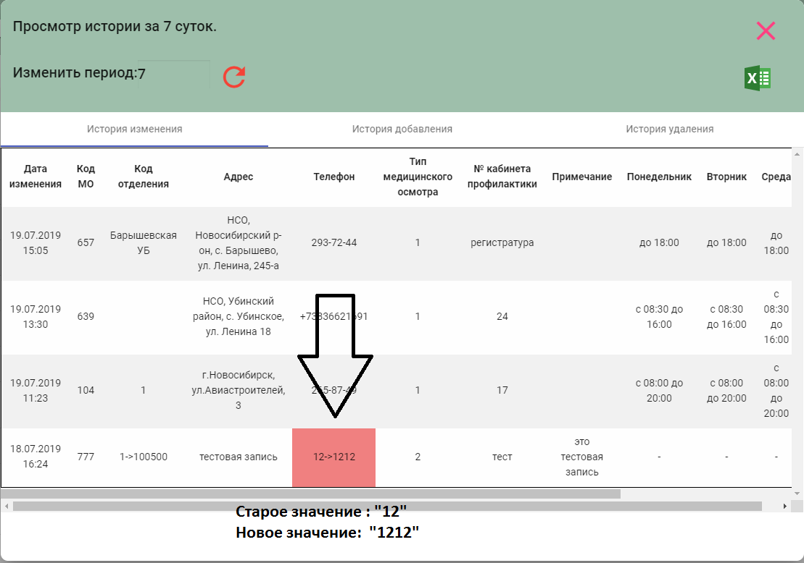

<!DOCTYPE html>
<html lang="en">
<head>
    <meta charset="UTF-8">
    <title>Об истории</title>
</head>
<body>
<!--
  <div>
    <p>
      В этом окне показывается история <b>изменения,добавления,удаления</b> записей в выбранной таблице.
    </p>
    <p><b>Важно!</b> Во вкладке "история изменения" некоторые ячейки таблицы могут быть выделены. Это значит, что этот столбец (выделенный) изменялся.</p>
    <p> Внутри этой ячейки можно увидеть старое и новое значение столбца:</p>
    
    <p>Во вкладках "история изменения" и "история удаления" просто показываются добавленные или удаленные за определенный период времени записи.</p>
  </div>-->
<input type="time" value="7:00">
</body>
</html>
